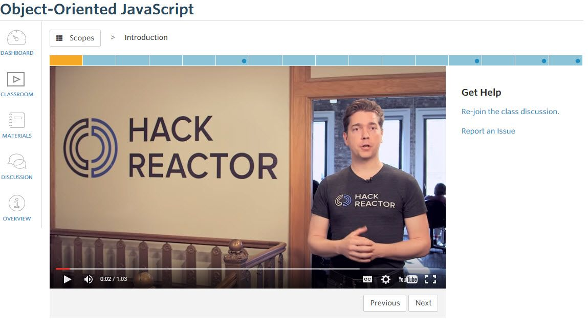

Ricky Garcia
Builder, sharer, life-long learner
Ricky Garcia
Builder, sharer, life-long learner
As a Front-End Web Developer, JavaScript is one of the most important languages in your toolbox. A strong foundation in the language’s features empowers you to write efficient and performant web applications. In this course you’ll explore a variety of ways to write object-oriented code in JavaScript.
